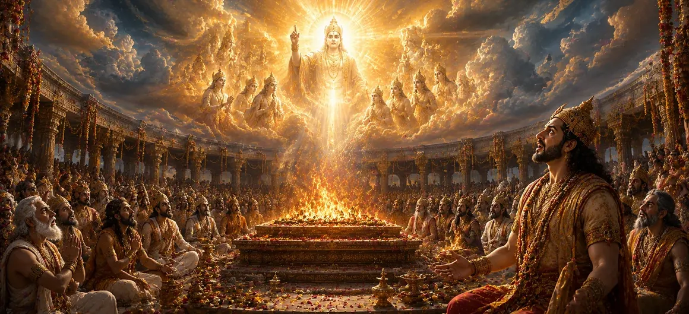

This chapter describes the divine reactions that followed Sati’s abandonment of her mortal body. As grief spread through the sacrificial assembly, a celestial proclamation echoed across the heavens. The divine voice condemned Dakṣa’s arrogance and revealed that the consequences of his actions would soon unfold. The proclamation served as a reminder that disrespect toward the Divine inevitably brings suffering, while devotion and righteousness are always protected by cosmic law.
After Sati’s departure, the atmosphere of the sacrifice changed completely. Gods, sages, and celestial beings stood in silence, overwhelmed by the tragedy they had witnessed. The sacred ceremony lost its splendor as sorrow and regret filled the hearts of those present.
At that moment, a celestial voice resounded through the heavens. The proclamation was heard by all assembled beings and carried the authority of divine truth. It declared that Dakṣa’s pride had blinded him to righteousness and that his actions had disturbed the sacred order of the universe.
The celestial proclamation openly condemned Dakṣa’s disrespect toward Lord Shiva. It reminded the assembly that Shiva was revered by gods and sages alike and that no sacrifice could be complete without honoring the Supreme Lord. The divine message exposed the spiritual blindness caused by pride and ego.
The proclamation warned that Dakṣa’s actions would not remain without consequence. The balance of cosmic justice would soon be restored, and those responsible for the insult to Shiva and Sati would face the results of their deeds. The heavens themselves seemed to tremble with the certainty of what was to come.
The universe ultimately restores balance when righteousness is violated.
The chapter emphasizes Shiva’s exalted position in the cosmic order.
Pride and disrespect eventually bring suffering and downfall.
Although the assembly was overwhelmed by grief, the celestial proclamation offered hope. It assured the righteous that divine justice would prevail and that the truth could never be permanently suppressed by arrogance or ignorance.
After hearing the heavenly proclamation, the assembly understood that momentous events were approaching. Fear, uncertainty, and anticipation filled the hearts of all present as they awaited the unfolding of divine will.
The celestial proclamation reminds devotees that divine justice may not always be immediate, but it is inevitable. Truth, devotion, and righteousness are ultimately upheld by the cosmic order. This chapter encourages faith in divine wisdom and teaches that arrogance can never triumph over eternal truth.
The celestial proclamation demonstrated that the events unfolding at Dakṣa’s sacrifice were not merely earthly matters. The heavens themselves bore witness to the injustice committed against Shiva and Sati. Through the divine voice, the universe affirmed that every action, whether righteous or sinful, is ultimately observed by the cosmic order.
Those who had supported Dakṣa’s actions began to feel fear and uncertainty after hearing the heavenly proclamation. They realized that the insult directed toward Lord Shiva was not a minor offense but a grave violation of divine order. The confidence they once possessed slowly gave way to anxiety about the consequences that were approaching.
The proclamation reminded all beings that divine will cannot be resisted forever. While pride and power may appear dominant for a time, they eventually yield before the greater force of cosmic truth. The message prepared the assembly for the dramatic events that would soon reveal the irresistible power of Shiva’s divine purpose.
"Though pride may rise for a moment, divine justice forever guards the path of truth."
Continue exploring the sacred events of Sati Khanda as the celestial proclamation foretells the consequences of Dakṣa’s actions and prepares the way for the awe-inspiring manifestation of Vīrabhadra.